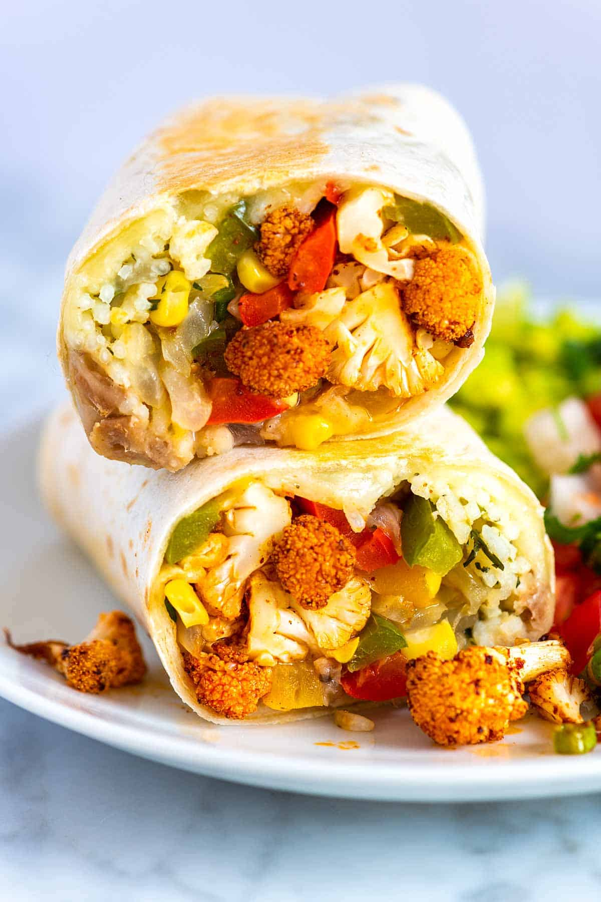

Burrito

Description
Vegetable packed and easy veggie burritos with spicy cauliflower, onions, peppers, rice, cheese, and beans. Easy to make and freezer friendly!
Ingredients
- 4 large tortillas(10-inches or larger in diameter)
- 1 cup(4 ounces) shredded Monterey Jack cheese
- 1 cup cooked rice
- 1 cup cooked pinto or black beans
- 1 medium head cauliflower(about 10 ounces), cut into small florets
- 2 medium bell peppers, any color, seeds removed and sliced into thin strips
- 1 medium onion, sliced into half moons
- 3 tablespoons olive oil, grape seed oil or neutral flavored oil
- 3/4 cup corn kernels, fresh or frozen, optional
- 1 1/2 teaspoons ancho chili powder or use our homemade chili powder, see notes
- 1 1/2 teaspoons smoked paprika
- 1 teaspoon onion powder
- 1 teaspoon garlic powder
- 1/8 teaspoon to 1/4 teaspoon cayenne pepper, depending on how spicy you want the veggies
- 1/2 teaspoon fine sea salt
- 2 lime or lemon wedges
- 1 scallion, chopped, optional
Steps:
- In a small bowl, combine the ancho chili powder, smoked paprika, onion powder, garlic powder, cayenne pepper, and 1/2 teaspoon fine sea salt. Stir until well blended.
- Heat the oven to 425 degrees Fahrenheit. Line two baking sheets with parchment paper, foil or a silicone baking mat. It is unlikely that all the veggies will fit on one baking sheet.
- In a medium bowl, toss the cauliflower florets with 2 tablespoons of the oil and two thirds of the spice mixture. Spread the cauliflower out onto the first baking sheet, facing as many of the flatter edges down so that they brown nicely.
- Use the same bowl that was used for the cauliflower and toss the onions and peppers with 1 tablespoon of oil and the remaining spice mixture.
- Add the onions and peppers to the second baking sheet, spacing them out so that they brown nicely.
- Roast the cauliflower until the edges are crisp and brown and the insides are tender, 20 to 35 minutes. Check after 15 minutes and give the cauliflower a stir to promote even browning. When done, squeeze a wedge or two of lime juice over the cauliflower and sprinkle the scallions on top.
- Roast the peppers and onions until tender and the edges begin to brown, 20 to 25 minutes. About 10 minutes before the vegetables are done, stir in the corn, if using.
- Use the cooked vegetables straight away or store in an airtight container in the fridge up to 4 days.
- Heat a wide skillet over medium-low heat. When warm, place one tortilla down into the skillet. When the first side is warmed, but not toasted, flip the tortilla. Place a 1/4 cup of the cheese down into the center of the tortilla and spread into a thin layer. When the second side of the tortilla is warmed and the cheese is starting to melt, transfer the tortilla to a cutting board. Repeat with remaining tortillas.
- Spoon 1/4 cup of the rice, 1/4 cup of the beans, a spoonful of the cooked peppers, onions, and corn, and a spoonful of the spicy roasted cauliflower down the center of each warmed tortilla.
- Fold the sides of the tortillas over the filling, and then tightly roll the end closest to you up and around the filling, pushing any bits that fall out back into the middle of the burrito. Place the burrito seam-side down.
- Heat a medium skillet over medium heat. Place burritos seam-side down into the hot pan and toast until the underside is lightly browned and crisp, 20 to 60 seconds. Rotate the burrito and repeat on all sides. Depending on how large your skillet is, you may need to do this in batches.
- Enjoy!